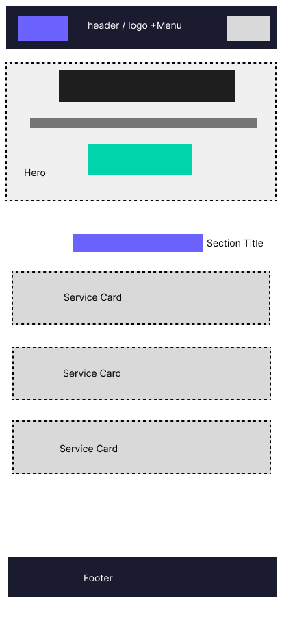
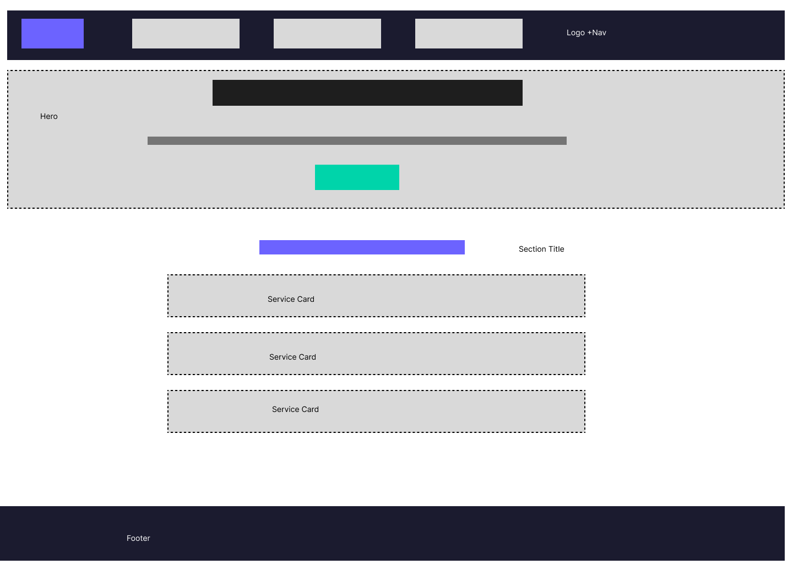

Site Name
Mentores Virtuales
Reason for selection: The name means "Virtual Mentors" in Spanish. It clearly communicates the brand's mission: guiding clients and students through the digital world. The business provides web development services and online programming education, so the name reflects both the personal mentoring relationship and the virtual, online nature of the work.
Optional domain availability: mentoresvirtuales.com
Site Purpose
The site serves as the professional hub for Mentores Virtuales. It presents the business as a one-stop solution for clients who need a digital presence and for students who want to learn programming. The website provides:
- Web development services — custom websites and web applications for businesses.
- Online courses — project-based programming courses (such as the JavaScript Fullstack Chess application course).
- A portfolio — showcasing past client work and GitHub projects.
- A contact form — so prospective clients can request a free quote.
Scenarios
These are questions a typical visitor might ask. They guide the content of the site:
- "I own a small business in El Salvador and need a professional website. What services does Mentores Virtuales offer and how much do they cost?"
- "I want to learn web development from scratch. What online courses are available and what will I be able to build after taking them?"
- "How can I see examples of previous work before hiring this developer?"
Color Scheme
The site uses a modern, tech-focused palette. Each color has a specific role:
Primary — #6C63FF
Links, primary buttons, brand accents, hover highlights.
Secondary — #1B1B2F
Header background, footer background, and main headings.
Accent — #00D4AA
Call-to-action buttons, icons, and section highlights.
Background — #FAFAFA
Page background and card surfaces (#FFFFFF) for body content.
Typography
Two Google Fonts are used throughout the site:
Montserrat
Used for all headings (h1–h4), the logo, and buttons. Its bold, geometric style gives the brand a strong, modern, professional look.
AaBbCc 123 — Montserrat 700
Inter
Used for all body text, paragraphs, navigation, and form labels. Inter is highly readable on screens, which keeps long descriptions and course information easy to read.
AaBbCc 123 — Inter 400
Wireframe — Home Page
Layout sketches of the home page for mobile and desktop views.

